WDF*IDF Top Ten Calculator
- latest update: 30/09/2013
- by: WebTec-Braun
- codecanyon.net/user/webtecbraun
- email: info@webtec-braun.com
Thank you for downloading the WDF*IDF Top Ten Calculator wordpress Plugin!
Overview
How to install
You just downloaded a zip file containing the folder “wtb_seo”. You need to put it in your wordpress plugins folder. You can choose how to do it: Either you take the Wordpress feature to upload and install plugins or you upload it manually to your server.
Step 1:Go to the plugins menu and choose “Add new”
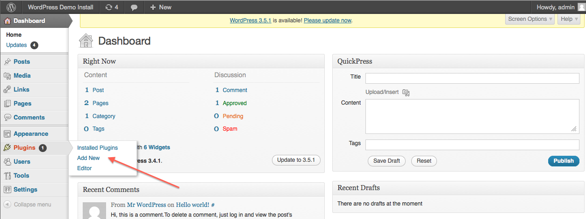
Step2: Click on “upload"
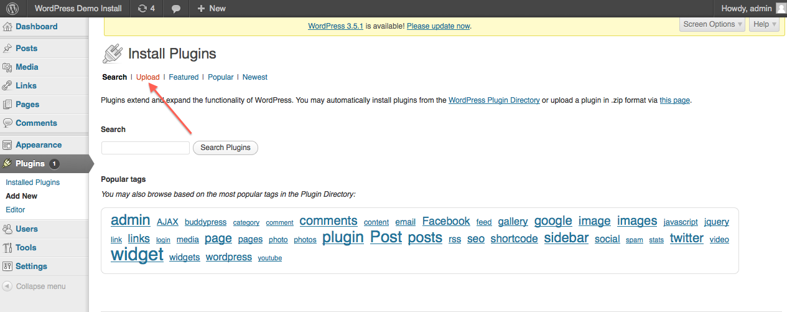
Step3: Click on “Browse” button, then select the plugin file “WDF-IDF.zip”, click open, and then click “Install Now”
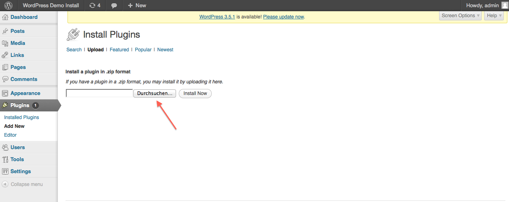
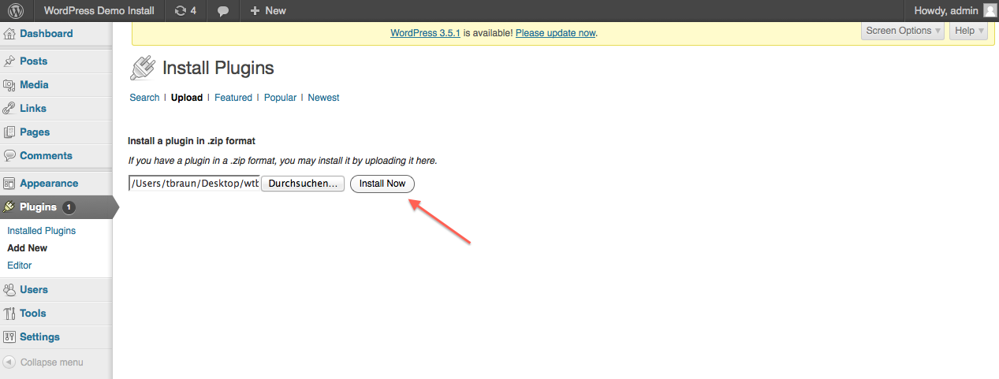
Step 4: To activate the plugin, click on “Activate Plugin”
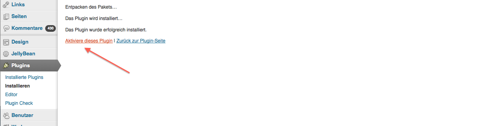

How to use
Create a post or page. Going to Settings / WDF * IDF Top 10 calculator you can specify for which types of content the plugin should be active. You can also set which google domain to be used for the query.
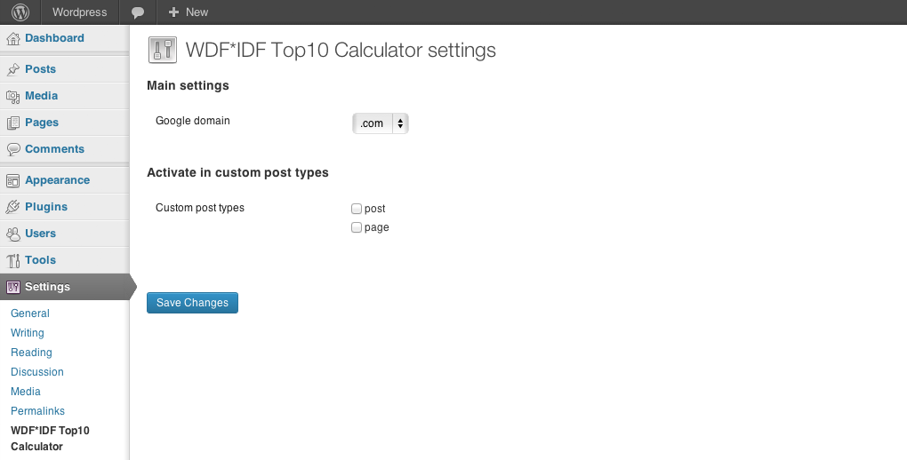
Under the text editor, you see the options for the plugin. If you do not see this, enable the options by ticking the box for "Show on screen" for WDF * IDF Top 10 calculator.
1)
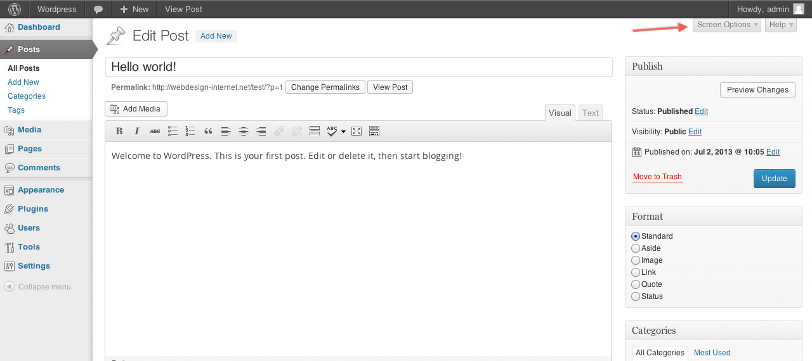
2)
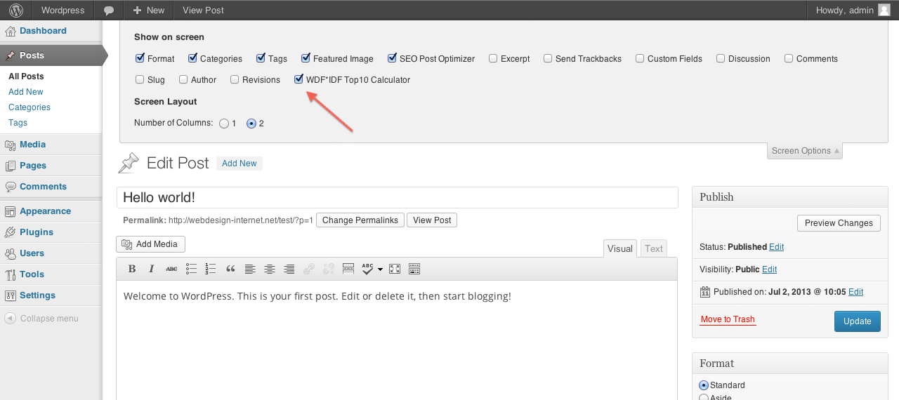
Enter the word (main keyword) that you want to analyze and click on "check WDF * IDF." Please wait for about 10-15 seconds.
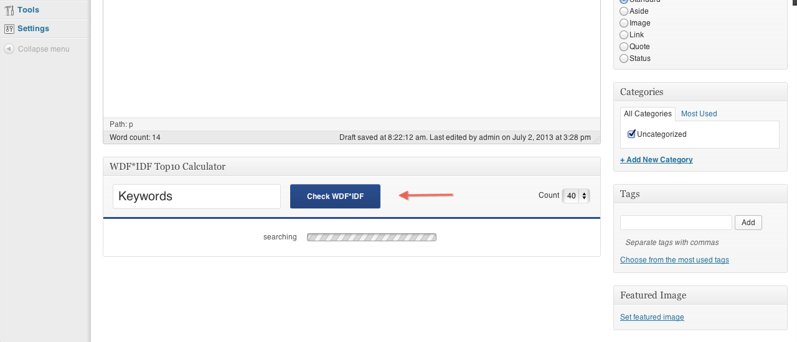
If you edit your text, it is not necessary to update the post or the page, clicking on "check WDF * IDF" is enough to update the values.
After this short delay, the graphics appear.
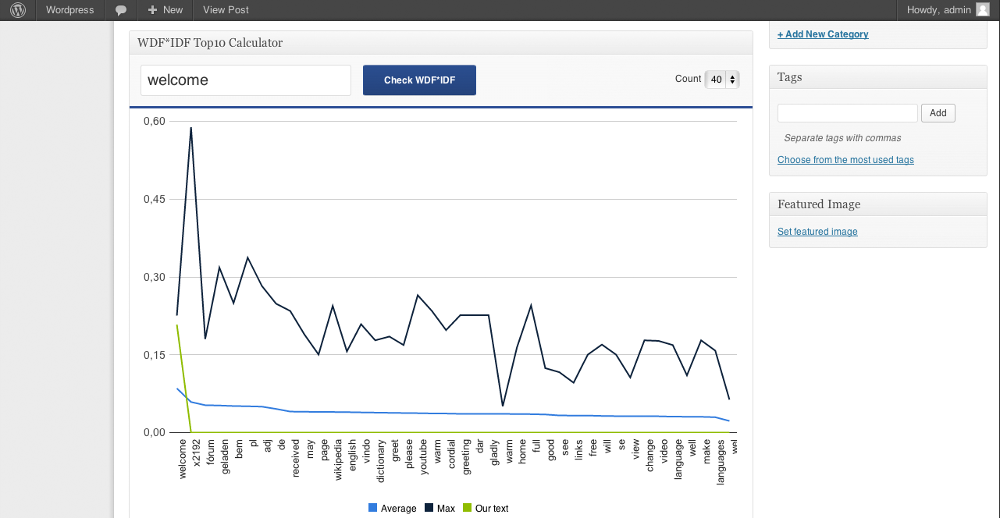
Now you see the IDF * WDF values for the defined words and terms that appear on the top 10 pages
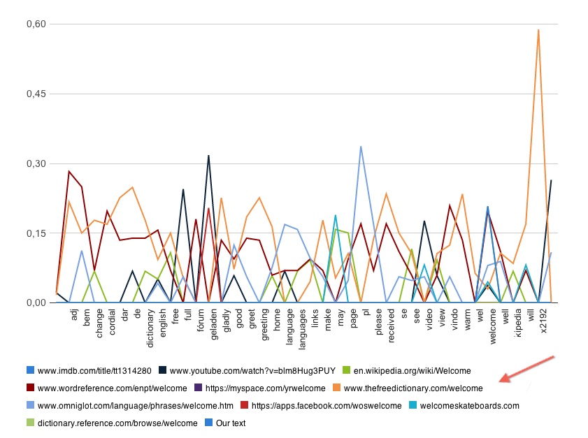
By clicking on the labels of the graphs in the legend you can show or hide them.
Features
- Graphic representation of maximum, average and private value
- Evaluation of up to 60 words
- Representation of the top 10 ranked sites in comparison to your own page
- Includes existing stopword list
- Add your own stopwords
Requirements
- Requires at least Wordpressversion: 3.0.1
Tested up to Wordpressversion: 3.5.1
- Requires at least PHP version: 5.2.4
Tested up to PHP version: 5.4.6
- Installed cURL PHP extension on Server
Support
If you have any questions or problems, please contact us. info@webtec-braun.com